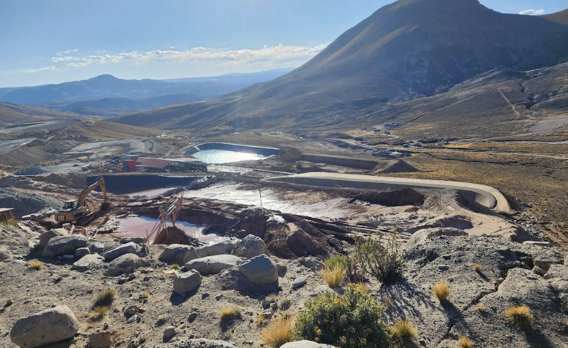

River Remedy — contaminant migration site
A six-chapter, bilingual analytical site I designed and built solo as the public-facing extension of the River Remedy master's thesis. Interactive 3D surfaces, mapped sampling stations, and English/Spanish parallel narration — deployed to GitHub Pages from a single codebase I authored end-to-end.